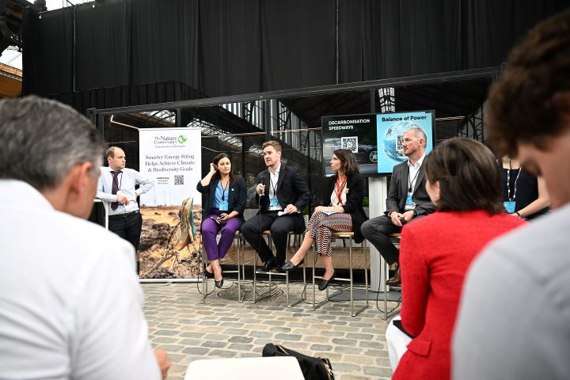

![]()

Overview
Europe is now negotiating a landmark law to restore damaged environments. But that’s running into opposition from those who see a contradiction between nature protection and energy and food security. Looking ahead, the EU is set to triple the build out of wind and solar capacity by 2030. Can Europe fight both crises?
Last year, Eurelectric launched the PowerPlant project focused on reshaping the public discourse. The goal is to promote integrated RES and infrastructure projects, which serve to both speed up the decarbonisation of the energy system and contribute to regenerate some of the 81% of habitats which are degraded across the EU.
Within this context, ensuring an optimal spatial planning is the first step to both minimise the impact on nature while providing visibility for renewables developers. Based on the recently agreed renewables permitting framework, by mid-2024 EU Member States are mandated to map all land and water surfaces needed to reach their 2030 renewable energy objectives. Optimal zoning will require combined nature and energy planning based on data-driven intelligence and involving all the relevant stakeholders in a timely manner.
The panelists will explore various solutions to tackle the climate and biodiversity crisis together, including:
- How can we avoid impact on environmental sensitive areas while reaching the 2030 EU RES targets?
- What methodologies should Member States follow when mapping renewables suitable areas?
- What role for data-driven intelligence to ensure a sound energy transition planning?
- What is the electricity sector doing to minimise their impact on nature? And what is the necessary enabling framework to scale it up?
Citation
@online{dunnett2023,
author = {Dunnett, Seb},
title = {Acheiving {Europe’s} Renewable Energy Targets While
Protecting Nature},
date = {2023-06-20},
url = {http://sebdunnett.com/talks/2023-06-20-power-summit/},
langid = {en}
}